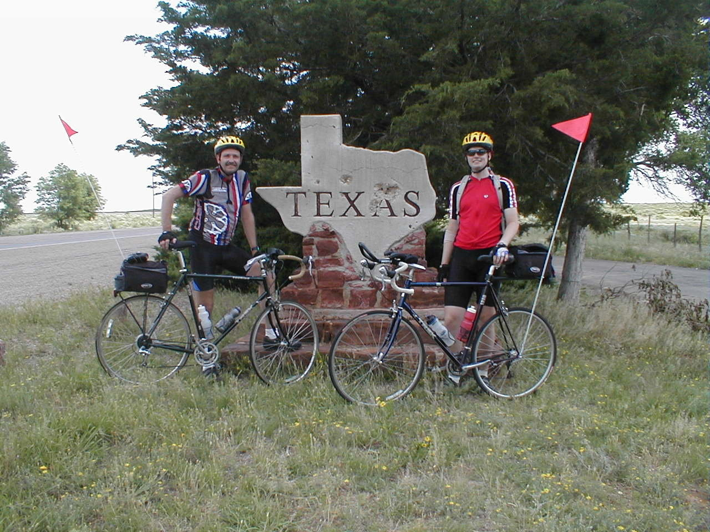

Day 17: May 29, Tucumcari, NM to Dalhart, TXPrevious Day - Home - Next Day Photo of the DayCAPTION Keegan's LogDay 17: May 29, Tucumcari, NM to Dalhart, TX Mileage: 96.54 milesWeather: Warm, overcast, headwinds in the morning, Hot, sunny, tailwinds in the afternoon Vertical Climb: 1890 feet Riding Time: 6:15 As we we getting ready this morning, the local news reported winds from the southwest, perfect for our northeast ride. Unfortunately we've learned not to trust the weather reports. We left Tucumcari at 7:15 this morning and quickly settled onto US-54, our route for the day. The wind was directly in front of us, and was fairly strong in the morning. It was relatively cool because of the overcast, there was apparently a big thunderstorm last night. We were riding over long gentle rolling hills, the countryside around was all grass, hardly a tree in sight. The first sag was 30 miles into the route, again just a picnic table by the side of the road. We were in no particular hurry so we didn't leave for a while, but soon the call of the road had lured us again. We came upon the tow of Nara Visa about 50 miles into the ride, the town was just big enough for a café, which we stopped at for lunch. It's amazing how a sudden influx of 20 cyclists can overwhelm a small-town café, but the waitress was very nice about it. The Texas border was only a few miles past Nara Visa, we stopped for a picture and the obligatory sand sprinkling. By this point the conditions had changed a little, the overcast began to clear and the winds slowed and turned somewhat, by the end of the day we would have a gentle but constant tailwind. The last sag was 66 miles into the route, when we went to leave I discovered that I had a flat front tire. Luckily Pat was there and he was on the case before I could finish saying "flat", so I was going again in a matter of minutes. The last bit was quicker due to the tailwinds, so we quickly approached the town of Dalhart. About 10 miles out we passed the first feed lot, a giant farm where cows are fattened up before packing. The smell was less than pleasant, which also helped us in getting to Dalhart as fast as possible. We made it to the hotel and went through the daily routine of crashing on the beds before regaining enough energy to move. Dinner was at Pizza Hut, and after dinner we had a guest speaker come in to tell us about the feed-lot industry. Apparently the first lot we passed held 75,000 cattle, which are there for a few months while they are fattened up and then shipped out again. Despite the utter fascination (no pun intended...) I felt, I left the lecture early as I feel a bit tired after a long day of riding. Tomorrow is a short day, only 72 miles, and a whopping 150 feet of climbing. Phil's LogAs you athered, the day into Tucumcari was long.. There was one surprise downhill segment, about three miles, coming off a plateau. That was thrilling. There was another rock cut straight back up onto another plateau - I chose to ride it intellectually, I walked it. The day took us from high desert to plains, but it was a very long day, a very long day. Today's ride also started with a headwind. For some unusual reason, Keegan and I were near the front of the pack and the first four to arrive at ----------- restaurant in Nara Visa. There were four young men and the waitress in the place when we arrived in our tight bicycling shorts, loud jerseys, headsweats and shoes that clicked on the hard tile floor. We were noted with more than a little skepticism. In about ten minutes, Woo-hoo Julie and a bunch of other bikers arrived, and Julie explained to the four cow hands that we wre riding our bicycles to Boston. Uh huh. The winds slowly swung to the southwest and the ride became easier - except for the part where we rode past the smelly feedlot. And after dinner a guy from the smelly feedlot came to the hotel to show slides of the feedlot and talk about how not to make needle marks in the meat when you "doctor" the cows and now I cn't even eat McDonald's Happy Meals anymore. Did you know that they now have hydraulic cow squeezers, and the guy never did tell us why they squeeze cows. I don't want to know. Time zone change, we lose an hour of sleep. Goodnight. |
{kind=link}